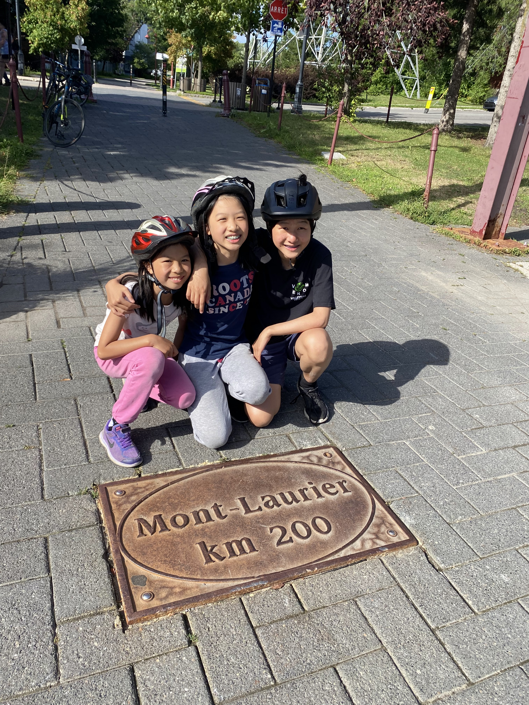

Biking is one of my favourite hobbies. Here I'm with my siblings after completing a 200km bike ride from Mont-Laurier to Saint Jerome.

My favourite winter activity is skiing and I recently started learning how to snowboard. In the picture, I'm cross country skiing, for the first time.
Here I am with my cross country team. I was a qualifier for the conference championships round. Apart from running, I am also a part of the basketball team.
Every spring, I raise monarch butterflies from egg to increase caterpillar survival rate. Here I am with a monarch shortly after it emerged from it's chrysalis.